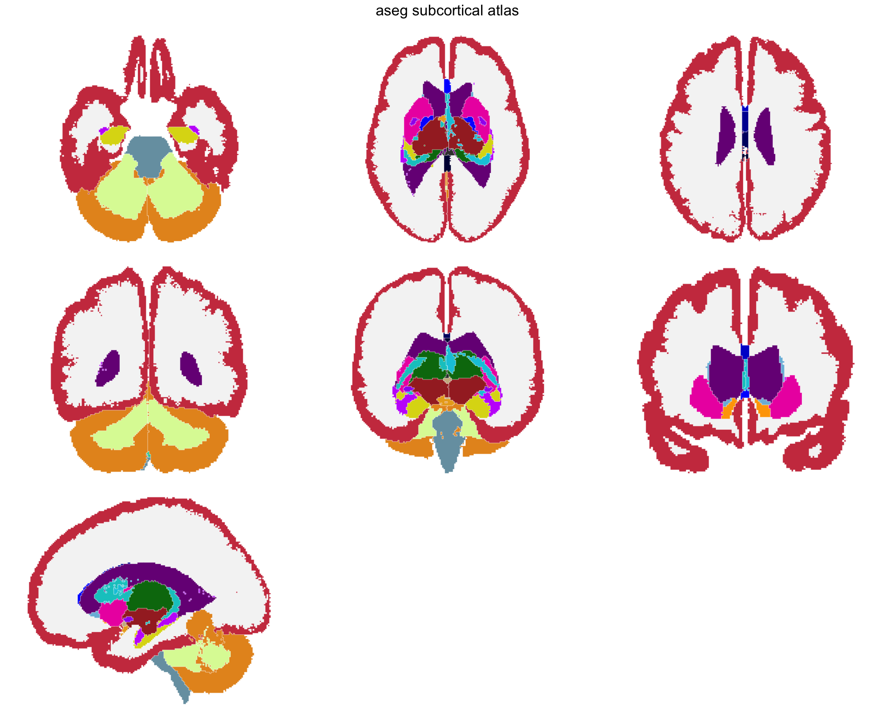
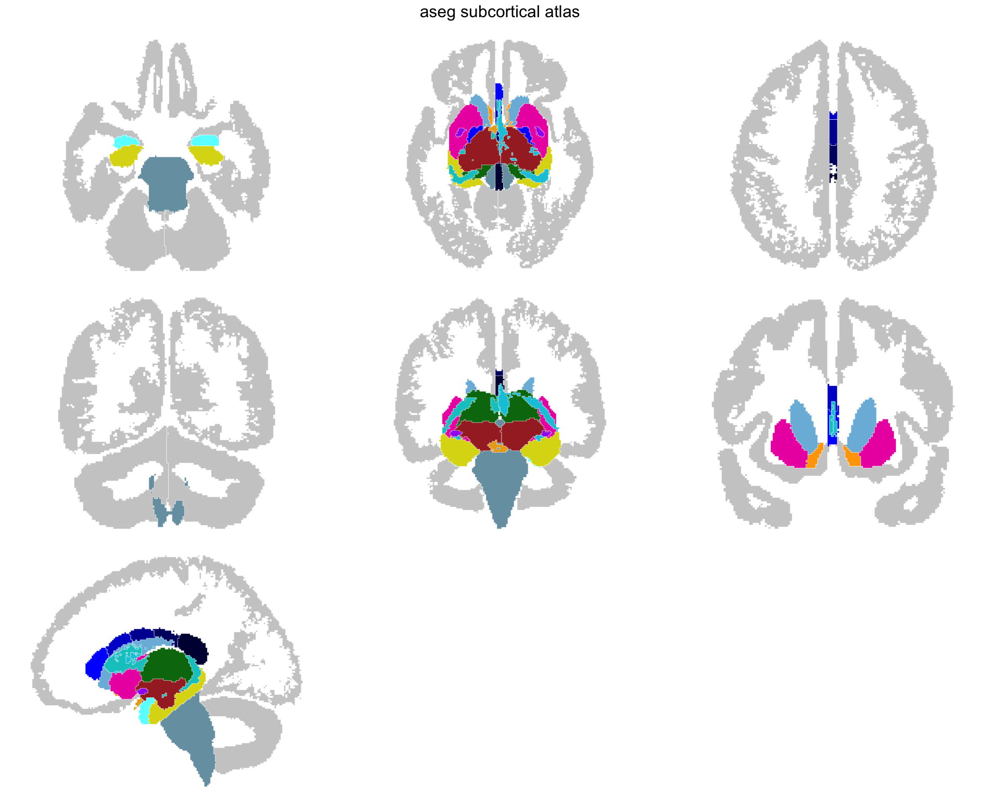
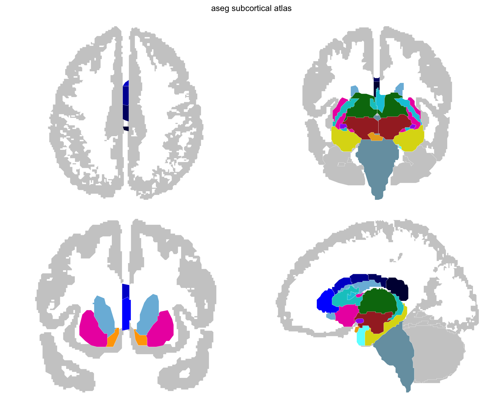

Subcortical atlases represent the structures beneath the cortical surface: thalamus, hippocampus, amygdala, caudate, putamen, and others. They come from volumetric segmentations like FreeSurfer’s aseg.mgz, where each voxel is assigned a label.
The pipeline tessellates labelled voxel regions into 3D meshes and (optionally) creates 2D projection views that collapse a slab of the volume onto a single plane.
This tutorial recreates the aseg atlas — the same pipeline behind data-raw/make_aseg_atlas.R in ggseg.formats.
What you need
- FreeSurfer installed with the
fsaverage5subject
Creating the atlas
create_subcortical_from_volume() takes a segmentation volume and a colour lookup table. The pipeline tessellates each labelled region into a 3D mesh, then creates 2D projection views:
aseg_raw <- create_subcortical_from_volume(
input_volume = aseg_volume,
input_lut = color_lut,
atlas_name = "aseg"
)
#> Warning: Atlas has 31614 vertices (threshold: 10000)
#> ℹ Large atlases may be slow to plot and increase package size
#> ℹ Call `atlas_simplify(atlas, keep = 0.2)`, then `atlas_smooth(atlas)`, to tidy
#> it and reduce vertices
aseg_raw
#>
#> ── aseg ggseg atlas ────────────────────────────────────────────────────────────
#> Type: subcortical
#> Regions: 27
#> Hemispheres: left, NA, right
#> Views: axial_1, axial_2, axial_3, coronal_1, coronal_2, coronal_3,
#> sagittal_left
#> Palette: ✔
#> Rendering: ✔ ggseg
#> ✔ ggseg3d (meshes)
#> ────────────────────────────────────────────────────────────────────────────────
#> hemi region label
#> 1 left cerebral white matter Left-Cerebral-White-Matter
#> 2 left cerebral cortex Left-Cerebral-Cortex
#> 3 left lateral ventricle Left-Lateral-Ventricle
#> 4 left inf lat vent Left-Inf-Lat-Vent
#> 5 left cerebellum white matter Left-Cerebellum-White-Matter
#> 6 left cerebellum cortex Left-Cerebellum-Cortex
#> 7 left thalamus Left-Thalamus
#> 8 left caudate Left-Caudate
#> 9 left putamen Left-Putamen
#> 10 left pallidum Left-Pallidum
#> ... with 33 more rows
plot(aseg_raw)
Stage 1 — everything aseg labels, on every view the pipeline made.
That is the whole segmentation, and it is not yet an atlas anyone would want: cortex and white matter dominate the picture, and half the views say the same thing twice. The rest of this tutorial is subtraction.
The default pipeline creates seven projection views focused on the subcortical range: three axial slabs, three coronal slabs, and one sagittal (axial_1 to axial_3, coronal_1 to coronal_3, sagittal_left). Each view collapses a slab of the volume onto a single plane, giving you spatial context without the complexity of individual slices.
Removing unwanted regions
The aseg segmentation contains everything — cortex, white matter, ventricles, CSF. For a subcortical atlas, most of these are noise. Remove them:
aseg_raw <- aseg_raw |>
atlas_region_remove("White-Matter", match_on = "label") |>
atlas_region_remove("WM-hypointensities", match_on = "label") |>
atlas_region_remove("-Ventricle", match_on = "label") |>
atlas_region_remove("-Vent$", match_on = "label") |>
atlas_region_remove("CSF", match_on = "label") |>
atlas_region_remove("Cerebral-Cortex", match_on = "label")Patterns are regular expressions, so -Vent$ matches “3rd-Vent” and “4th-Vent” without catching “Ventral-DC.”
plot(aseg_raw)
Stage 2 — the structures we actually want, once the bulk tissue is gone.
The cortical ribbon and white matter are gone, and what is left is what the atlas is for. The grey silhouette stays: it is context geometry, not a region, so it gives the structures somewhere to sit without taking a colour.
Setting context regions
The cortex works well as a background outline — it shows where subcortical structures sit relative to the brain surface without competing for colour:
aseg_raw <- aseg_raw |>
atlas_region_contextual("Cortex", match_on = "label")Selecting views
Not all projection views are equally useful. Keep the ones that show your structures best:
aseg_raw <- aseg_raw |>
atlas_view_keep("axial_3|coronal_2|coronal_3|sagittal_left")
plot(aseg_raw)Stage 3 — only the views that show the structures well.
Three views are gone. Two showed almost nothing, and one added no information while costing as much space as the views that carry the atlas — the reader still has to check it to find that out.
Cleaning up the layout
Gather views into a compact arrangement:
aseg_raw <- aseg_raw |>
atlas_view_gather()
plot(aseg_raw)Stage 4 — gathered. Same geometry, less white space.
Nothing was added or removed here; the views were simply packed together. It matters more than it sounds: an atlas is usually printed small, and the white space between views is space the structures could have had.
Tidying the geometry
Every outline here is still made of mesh triangle edges, so each nucleus is bounded by a staircase rather than a line anyone would draw. count_vertices() gives the price, and says where it is being paid:
vertices <- count_vertices(aseg_raw)
sum(vertices)
#> [1] 10909
sum(vertices[grepl(context_pattern(), names(vertices))])
#> [1] 6796Most of the atlas is the cortex silhouette. That matters for what comes next: the create_*() functions warn above ten thousand vertices, and here the context geometry alone accounts for the bulk of it.
Tidying is a separate post-processing step in two parts — atlas_simplify() drops vertices, atlas_smooth() rounds off what is left — and on a subcortical atlas both have to be applied twice, because the context and the structures want opposite things. The silhouette is only useful while its sulci and gyri survive, so it needs gentle settings; the nuclei need firmer ones to read as smooth shapes. A single pass tuned for nuclei flattens the cortical ribbon into a blob.
Simplify each separately:
aseg_raw <- aseg_raw |>
atlas_simplify(keep = 0.5, labels = context_pattern()) |>
atlas_simplify(keep = 0.25, exclude = context_pattern())
sum(count_vertices(aseg_raw))
#> [1] 5478
plot(aseg_raw)
Stage 5 — simplified. Most of the vertices are gone; the corners they left behind are not.
keep = 0.5 on the context is deliberately mild. It drops roughly a quarter of the contour rings, which is a real loss, but the alternative is a silhouette whose sulci close up as soon as it is smoothed. Simplification is topology-aware, so neighbouring structures lose the same vertices and no gaps open between them.
Then smooth each separately, and note the second argument:
aseg_raw <- aseg_raw |>
atlas_smooth(
smoothness = 0.35,
labels = context_pattern(),
method = "chaikin"
) |>
atlas_smooth(smoothness = 0.4, exclude = context_pattern())
sum(count_vertices(aseg_raw))
#> [1] 6621
plot(aseg_raw)Stage 6 — smoothed. The staircases are gone and the silhouette still has its folds.
method = "chaikin" is not optional for the context. The default close dilates and then erodes, which fills any hole narrower than the smoothing distance — and on a cortex silhouette those holes are the sulci, so the default destroys exactly what the context is for. Chaikin’s corner-cutting preserves rings instead.
Notice that the count went back up. Smoothing is not a reduction step: chaikin subdivides each corner it cuts, and close resamples what it traces. Simplify to set the budget, smooth to set the look, and read the total after both rather than after either.
These four numbers — two thresholds and two smoothing strengths — are the ones worth experimenting with, and none of them requires re-running the pipeline.
Adding metadata
The raw labels are technical identifiers like “Left-Thalamus-Proper.” Join human-readable names and structural groupings:
normalize_region <- function(x) {
ifelse(
is.na(x),
NA_character_,
x |>
tolower() |>
gsub("-", " ", x = _) |>
gsub("_", " ", x = _) |>
gsub("left |right ", "", x = _) |>
trimws()
)
}
aseg_metadata <- data.frame(
region = c(
"Thalamus-Proper", "Caudate", "Putamen", "Pallidum",
"Hippocampus", "Amygdala", "Accumbens-area", "VentralDC",
"Brain-Stem"
),
label_pretty = c(
"thalamus", "caudate", "putamen", "pallidum",
"hippocampus", "amygdala", "nucleus accumbens", "ventral DC",
"brain stem"
),
structure = c(
"diencephalon", "basal ganglia", "basal ganglia", "basal ganglia",
"limbic", "limbic", "basal ganglia", "diencephalon",
"brainstem"
)
)
core_with_meta <- aseg_raw$core |>
mutate(region_key = normalize_region(region)) |>
left_join(
aseg_metadata |>
mutate(region_key = normalize_region(region)) |>
select(region_key, label_pretty, structure),
by = "region_key"
) |>
mutate(region = coalesce(label_pretty, region)) |>
select(hemi, region, label, structure)Rebuilding and saving
Construct the final atlas from modified components:
aseg <- ggseg_atlas(
atlas = aseg_raw$atlas,
type = aseg_raw$type,
palette = aseg_raw$palette,
core = core_with_meta,
data = aseg_raw$data
)
aseg
#>
#> ── aseg ggseg atlas ────────────────────────────────────────────────────────────
#> Type: subcortical
#> Regions: 17
#> Hemispheres: left, NA, right
#> Views: axial_3, coronal_2, coronal_3, sagittal_left
#> Palette: ✔
#> Rendering: ✔ ggseg
#> ✔ ggseg3d (meshes)
#> ────────────────────────────────────────────────────────────────────────────────
#> hemi region label structure
#> 1 left thalamus Left-Thalamus <NA>
#> 2 left caudate Left-Caudate basal ganglia
#> 3 left putamen Left-Putamen basal ganglia
#> 4 left pallidum Left-Pallidum basal ganglia
#> 5 <NA> brain stem Brain-Stem brainstem
#> 6 left hippocampus Left-Hippocampus limbic
#> 7 left amygdala Left-Amygdala limbic
#> 8 left nucleus accumbens Left-Accumbens-area basal ganglia
#> 9 left ventral DC Left-VentralDC diencephalon
#> 10 left vessel Left-vessel <NA>
#> ... with 17 more rows
atlas_labels(aseg)
#> [1] "Brain-Stem" "CC_Anterior" "CC_Central"
#> [4] "CC_Mid_Anterior" "CC_Mid_Posterior" "CC_Posterior"
#> [7] "Left-Accumbens-area" "Left-Amygdala" "Left-Caudate"
#> [10] "Left-choroid-plexus" "Left-Hippocampus" "Left-Pallidum"
#> [13] "Left-Putamen" "Left-Thalamus" "Left-VentralDC"
#> [16] "Left-vessel" "Optic-Chiasm" "Right-Accumbens-area"
#> [19] "Right-Amygdala" "Right-Caudate" "Right-choroid-plexus"
#> [22] "Right-Hippocampus" "Right-Pallidum" "Right-Putamen"
#> [25] "Right-Thalamus" "Right-VentralDC" "Right-vessel"
table(aseg$core$structure)
#>
#> basal ganglia brainstem diencephalon limbic
#> 8 1 2 4
plot(aseg)
Stage 7 — the finished atlas. Same geometry as stage 6; what changed is the names behind it.